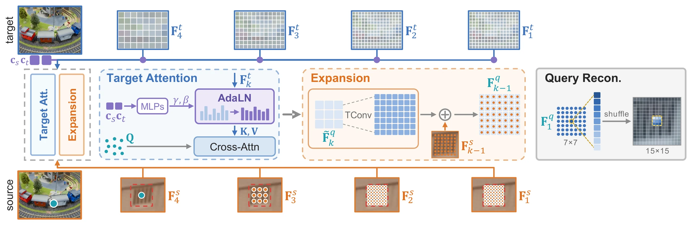

VGGM-Nexus Unified Visual Geometry-Grounded Model
Any pixel. Any time. One model.
1Visual Geometry Group, University of Oxford 2FAR, Amazon
3D Point Tracking
13 of 16
best results on WorldTrack, second in the other three.
Multi-View Reconstruction
5 of 6
metrics ranked first on 7-Scenes and Neural RGB-D.
Depth
6 of 6
best metrics on Bonn, ETH3D and KITTI.
Efficiency
4.3 s
for 230K points tracked over 64 frames; OpenD4RT takes 33 s and ARROW 176 s.
Compared with unified 3D/4D models. Trained on public datasets only.
01 / Interactive 4D viewer
4D reconstruction in the wild
Each clip shows source-frame pixels at the current time, with 3D tracks coloured from the first to the last frame.
Drag to orbit · scroll to zoom · right-drag to pan
02 / Interactive 3D viewer
3D reconstruction in the wild
Each scene shows the pointmaps of 10 views, fused in the first camera.
Drag to orbit · scroll to zoom · right-drag to pan
03 / Virtual tour
Virtual Tour of Visual Geometry Group
A 56-second phone video through our building, reconstructed by VGGM-Nexus. Press play to walk along; people passing by are tracked.
Drag to orbit · scroll to zoom · right-drag to pan
04 / Method
Point-to-patch querying: one query, a whole patch
Existing dynamic models pay for what was not asked. Full-frame models decode every pixel, even for a few tracks. Point-to-point models decode each pixel separately, which is slow for dense output.
| Paradigm | Models | Sparse queries | Dense output | 64 frames, one GH200 GPU |
|---|---|---|---|---|
| Full-frame | V-DPM, 4RC | ✕ | ✓ | 188 s for 128 tracks (V-DPM) |
| Point-to-point | ARROW, D4RT | ✓ | ✕ | 176 s for 230K points (ARROW) |
| Point-to-patch ours | VGGM-Nexus | ✓ | ✓ | 1.6 s and 4.3 s for the same two |


Target attention finds the motion
The encoder already mixes all views; camera tokens handle camera motion. Click a frame to change the target time, or the source frame to move the query.
Source fusion keeps the detail
root query
3×3 children
7×7 children
Result: fine-grained geometry, +2.96 APD on WorldTrack. With fusion, the small squares show the source features each level adds, coarse to fine.